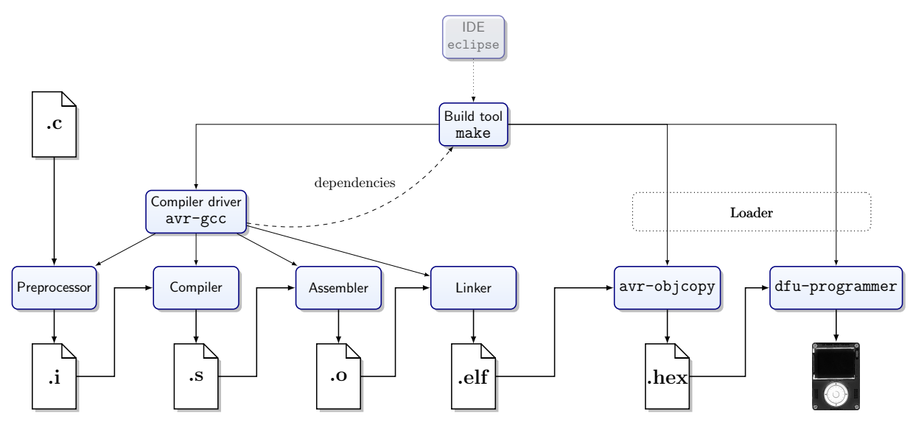
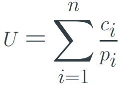
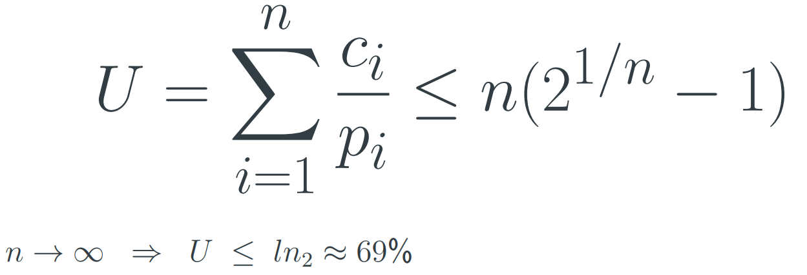
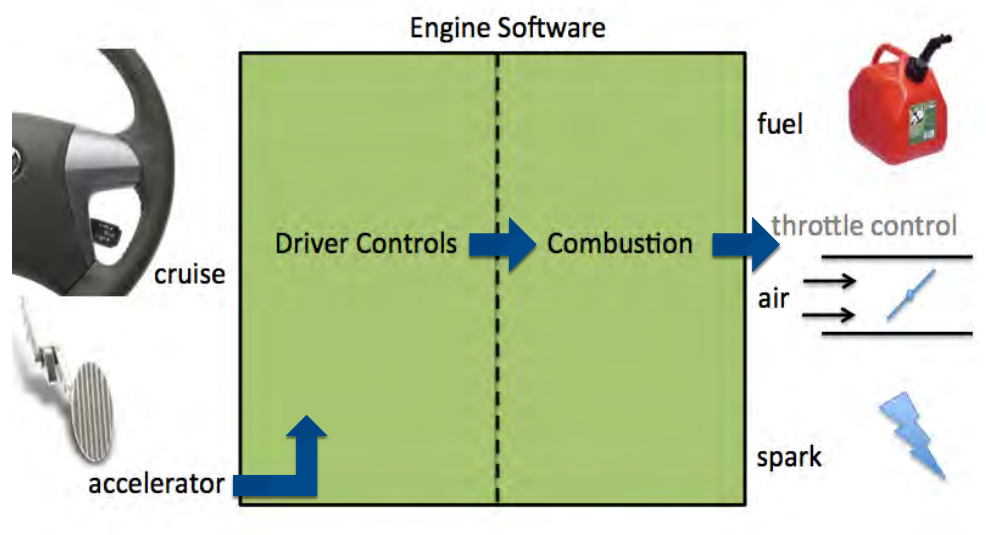
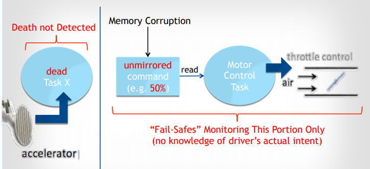

Computer Systems II
Joshua Gregory
Introduction (please read) 9
Embedded Systems 9
Cross Compilation 9
Build Process 10
Cross-linker 10
Cross-assembler 10
Errors and Options 10
Intermediate Files 11
Sections 11
Translation Units 12
La Fortuna Hardware 12
Microcontroller 12
System on Chip (SoC) 13
Embedded Computer 13
La Ruota Della Fortuna (LaFortuna) 13
Programming in C 14
When to use C 15
C in Practice 16
Header files: *.h 16
Things to be aware from the start 16
Unspecified 16
Undefined 17
Memory-mapped I/O 17
How is software connected to Hardware? 18
Control Registers 18
Special Instructions vs. Memory Mapping 19
AT90USB1286: Address Spaces 20
AT90USB1286: Data Memory Map 20
Manipulating register bits 20
Interrupt Handling & Event Driven Programming 21
Basic I/O Methods 21
Programmed I/O (Polling) 21
Interrupt-driven I/O 21
Interrupts 21
Program Flow 21
Interrupt Service Routines (ISR) 22
Latency 22
Maximum Latency 23
Jitter 23
How to keep ISRs fast and simple? 23
ISRs in C 23
Event Driven Programming 24
State Machines 24
Internal and External Events 25
Events 25
Interrupt Vectors & Interrupt Service Routine 25
Volatile 26
ISR Implementation 26
avr-libc’s interrupt API 26
Memory Architecture 26
Harvard Architecture 26
Von Neumann vs. Harvard Architecture 27
Types of Memory on AVR Microcontrollers 27
Memory Technology 27
Flash 28
EEPROM 28
SRAM 28
Addressing 28
RAM Layout 28
Heap/Stack 29
Heap/Stack Collision 29
Handling Memory in C 30
Speed 30
Don’t be sloppy 30
How is malloc implemented 30
Device Drivers 31
Operating System (OS) 31
Uniform Interface 31
Management of Resources 31
Management of Interactions 31
OS Application Interface 32
Role of the Driver 32
Abstraction 33
Potential Drivers on LaFortuna 33
How to write a driver 33
Connecting Hardware to a Microcontroller 33
Connecting extra modules to LaFortuna 33
TFT LCD Display 33
ILI9341 TFT Display Driver 34
Microcontroller Interface Modes 34
Real-time Scheduling 34
Real-time Deadlines 34
CPU Utilization: U 34
Assumptions for Analysis 35
Load from Set of Periodic Tasks 35
Schedulability 35
Simple Case 35
Priority 35
Fixed Priority Scheduling 36
Rate Monotonic Scheduling (RMS) 36
Requirements for RMS 36
RMS Priority 37
RMS is optimal for fixed priorities 37
Harmonic Task Sets 37
RMS issues to consider 38
Dynamic Priority Scheduling 38
Earliest Deadline First 38
Earliest Deadline First (EDF) 38
Multitasking & RIOS 38
OS: Multiprogramming 38
Processes 39
Process States 39
State Transitions of Processes 39
Scheduling 39
Scheduling Algorithms 40
Round Robin 40
Lottery Scheduling 40
Scheduling Scenarios 40
Context Switching 41
Real-time Scheduling 41
Constraints On Computation 41
Real-Time Systems 41
RIOS 41
Key Concept of RIOS 41
Persistent Storage 42
On LaFortuna 42
EEPROM 42
CMOS Floating Gate Transistors 43
Speed vs. Endurance Trade-off 43
Amount of Data / Write Frequency 43
EEPROM on AT90USB1286 (LaFortuna Microcontroller) 43
Flash Memory 43
Flash Access 44
File System 44
Physical Layer 44
Mapping Logical Addresses to Physical Addresses 44
Interface Protocol 45
Serial Communication 45
SPI Protocol 45
Reading blocks from the card 47
Debugging Embedded Applications 47
Debugging 47
Typical Run-time Errors 48
When is debugging hard? 48
General Approach to Debugging 48
Strategies 48
Device Under Test 49
Gather Data 49
Access 49
Timing 49
Make Bug Reproducible 50
Debugging is a Science 50
Tools 50
Where can things go wrong? 50
Typical Scenarios 50
Memory Problems 51
Memory Leak 51
Memory Fragmentation 51
Available Stack Space 51
Memory Corruption 51
How to Debug Memory Problems? 52
Compiler Support 52
FAT File Systems 52
File System 53
Implementation 53
FAT File System(s) 53
FAT FS Metadata 53
CP/M 53
CP/M Disk Format 53
Directory entry (32 Bytes): 54
Present FAT FSs 54
FAT Layout 54
General “Disk” Layout 55
FAT-FS Partition 55
Volume ID Sector 55
Volume ID: 55
FAT-16 Directory Entry 55
Directory Entry 55
Short File Names 56
Attribute Byte 56
FAT Entries 56
Partition Table in MBR 57
Reading FAT 57
FAT start 57
Root Start 57
Data start 57
Simplest way to read data from SD card 58
FAT-FS Limitations 58
VFAT: Long File Names 58
Further additions to FAT-FS Family 59
Directory Entry: Fat16 vs. FAT32 59
Recognising the FAT FS Type 59
The FAT 60
FAT Example 60
FAT Structure 60
Reliability and Security 61
Reliability of Embedded Applications 61
Embedded Systems 61
Common Issues 61
Hardware 61
Software 61
What can happen? 62
What can be done? 62
The Situation: 62
Mitigation Measures 62
Application Specific Failure Modes 62
Example 62
How to respond? 62
Triple redundancy with voting 63
Protection Circuits 63
Defensive Programming 63
Reliability: Toyota Electronic Throttle Control 63
Michael Barr 63
Embedded Systems Defined 64
Embedded Systems 64
Embedded systems in cars 64
Review of Toyota’s Source Code 64
Electronic Throttle Source Code 64
~18 Months With Code 64
Electronic Throttle Control 64
Safety-Critical Systems 65
What Could Go Wrong? 65
Safety Has To Be Designed In 65
Electronic Throttle Control (ETCS) 65
Summary of Conclusions 65
Unintended Acceleration (UA) 65
NASA’s Code Review was bad 65
Software Malfunctions Happen 66
Toyota’s Operating System (OSEK) 66
Example of Unintended Acceleration 66
Software Causes of Memory Corruption 66
Spaghetti Code Defined 67
Dinosaur Says: 67
Toyota’s Spaghetti Code 67
Types of Spaghetti Code 67
Stack Anal. 68
Recursion 68
Toyota’s Stack Mistakes 68
Failed to Comply With…: 68
System Standards 68
Coding Standards 68
Violating Coding Rules Causes Bugs 69
Coding Standards (again) 69
NASA’s Software Areas of Concern 69
Toyota’s Defective “Safety Layers” 69
Layer 1: Mirroring of Critical Variables 69
Throttle Command Design 70
UA VIA Memory Corruption 70
Layer 2: DTCs and Fail-Safe Modes 70
Layer 3: Watchdog Supervisor 71
Defective Watchdog Design 71
Layer 4: ESP-B2 Monitor CPU 71
Toyota Failed to Review Monitor CPU 71
Monitor CPU is Last Line of UA Defence 72
Toyota’s Defective Software Process 72
Toyota’s Inadequate Software Process 72
Stuff 72
Toyota’s Defective Safety Culture 72
NASA sought what Barr Group found 72
Unreasonable Single Points of Failure 73
Individual Task Death Outcomes 73
The Test Space is Effectively Infinite 73
UA forever if brake on at task death 74
Case-Specific Opinions 74
Other Similar Incident Criteria 74
Toyota Experts 75
Reliability Continued 75
Context 75
Classic Problem 75
Interesting Problem 75
What can persist? 75
Reliability in Embedded Systems 76
What can be done? 76
Integrity Checks 76
Cyclic Redundancy Checksums 77
Which bit is wrong? 77
Redundant Codes 77
Watchdogs 77
Fault Recovery 77
Autonomous Fault Recovery 77
Watchdog 78
Software Faults 78
Watchdog in the AT90USB1286 78
Acting on the Watchdog 79
Usage Scenarios 79
Power Consumption 79
Protection 79
Avr-libc support 79
Initialization Period 80
Watchdog is Practice 80
Software Reset 80
Watchdogs differ from device to device 81
Stuck Tasks 81
Multi-tasking 81
Monitor Task 81
Time Scales 81
Event-driven Tasks 81
Robust Monitoring 81
What do we do when the dog bites? 82
? 82
Security in Embedded Applications 82
Risks 82
Internet of Things Research 82
IoT Security 83
Security in Microcontroller Applications 83
Threads? 83
Issues 83
What can be done? 83
Attacks On Hardware 84
Why is hardware attacked? 84
Attack Methods 84
Firmware as Attack Vector 84
Subverted Firmware on Drives 84
Subverted Firmware on USB Drives 85
Attack on physical infrastructure 85
IT- based attacks on physical systems 85
Infrastructure Security 85
Process Control Honey Pot 85
Serious damage to blast furnace in Germany 86
ThyssenKrupp, May 2013 86
Vulnerability in pacemakers 86
Cybersecurity of Infrastructure 86
Stuxnet 86
Outline of how Stuxnet worked 87
Ralph Langner: To Kill a Centrifuge 87
Iran’s approach to uranium enrichment 87
Cascade Protection System 87
Over Pressure Attacks 87
Rotor Speed Attack: Pushing the Envelope 87
Stuxnet Relations 88
Engineering 88
Exploited Vulnerabilities 88
Targeting 88
Impact 89
Stuff 89
Duqu 89
Stuxnet relation 90
Duqu Attack 90
Duqu: Installation 90
Duqu vs. Stuxnet 91
Duqu Logging 92
TL;DR 92
Actual useful stuff to know for the exam 95
RMS 95
FAT FS 96
RIOS and ISRs 98
Introduction (please read)
These notes are basically just copying from the lecture
slides, with possible additional info added for further explanation.
They are definitely not as good as Matt’s notes, but
writing notes is a good way to study, and if others can read
this and get value from it then that’s great :D
Edit: These were made when the module ran in 2018/2019.
Contents may have changed and stuff, but hopefully this will be
largely useful.
Embedded Systems
Cross Compilation
Source code needs to be compiled to an executable to be run.
This is usually done on the same machine.
-
Source code -> Compiler -> Executable
But cross complication is where the executable is meant to be
run on a different machine. Source code is compiled on a host,
then executed on a target.
This is done when compilation on the target is impossible /
impracticable.
Examples:
-
The first compiler or OS to be put onto new hardware
-
Low capability targets: embedded systems
The architecture of the host and target may be very
different.
-
Memory architecture (von Neumann / Harvard)
-
Word size (64 bit / 8 bit)
-
Order of bytes in word (endianness)
[Endianness is the sequential order in which bytes are arranged
into larger numerical values when stored in memory or when
transmitted over digital links.]
Build Process
This process includes the cross-compiler, cross-linker and
cross-assembler.
Cross-linker
[A computer utility program that takes one or more object files
generated by a compiler or an assembler and combines them into a
single executable file, library file, or another
'object' file.]
Cross-assembler
[An assembler that generates machine language for a different
type of computer than the one the assembler is running
in.]
Errors and Options
When in the build process you may need to:
-
Interpret error messages
-
Consider configuration options
There are many options to steer the build process, important
ones include:
-
Compiler optimization
-
Compiler warnings
-
Selection of libraries (paths and variants)
Intermediate Files

Intermediate Files:
-
.c - C source code
-
.i - In preprocess stage:
-
Header files included (the '#include'
instruction)
-
Macros replaced (the '#define' instruction)
-
Comments removed
-
Conditional compilation (instructions '#if',
'#ifdef', '#else', '#elif',
'#endif')
-
.o - Object file, created for each source file before
linking (relocatable)
-
.elf - Executable and Linkable Format, defines the structure for
binaries, libraries, and core files. Platform independent
binary interface for object files,
-
.hex - Raw hex data (can be flashed on microcontrollers)
Other files
-
a.out / .exe - Executable files, Assembler Output
-
.so / dll - Shared Object, Dynamically Linked, library files
Sections
Memory segments are laid out with virtual addresses.
|
Section
|
Use
|
Location
|
|
.text
|
Instructions
|
Flash Memory
|
|
.rodata
|
Read-only data
|
Flash Memory
|
|
.data
|
Initialised global variables
|
Flash copied to RAM
|
|
.bss
|
Uninitialised global variables
|
RAM zeroed out
|
There are 24 section types defined in ELF, but you don’t
need to know the rest (I hope)
-
The compiler assigns program and data to sections, taking into
account the scope and qualifiers like const
-
The linker places the sections to virtual memory
-
The loader places the sections in physical memory
Translation Units
C-Source code has three scopes
-
Program wide scope
-
File scope
-
Block scope
Programs are organized in files
Files can be compiled independently (.c -> .o)
La Fortuna Hardware
Embedded Hardware comes in made different shapes and
sizes:
-
Microcontrollers
-
System-on-Chip
-
Embedded Computers
Microcontroller
Some properties of microcontrollers are:
-
Low power requirements (a few mA [milliamps])
-
Flash Memory for programs: 4-128 kB
-
RAM: typically from 0-32 kB
-
Easy to program in C or C++
-
Cross-compiler setup relatively simple
-
In-system-programmers are cheap
-
[The ability of the microcontroller to be programmed while
installed in a complete system, rather than requiring the
chip to be programmed prior]
-
In quantity they can be very cheap
-
Very low sleep power
-
Can be extremely small and low capability
-
(e.g., 4-bit CPU, no RAM only registers)
System on Chip (SoC)
Some properties of systems on a chip are:
-
Typically ARM Core CPUs
-
Flash and RAM in MB range
-
Cross-compiler setup is complex
-
Often used with cloud-based cross-compiler
-
Micro Python on SoC
-
SoC is now powerful enough to run scripting languages, like
micro python
-
Fills the gaps between low-level C-programming and full
embedded computer
Embedded Computer
Some properties of embedded computers are:
-
Convenient development with login console
-
Sufficient computing capability for image processing
-
Current consumption several 100 mA
-
System boot time makes frequent sleeping not
efficient
-
Complex Interrupt architecture makes precise timing of I/O
difficult
-
Often combined with microcontroller for better control of
I/O
As you can see, choosing a piece of embedded hardware has
trade-offs, and the right hardware will depend on the task you
want to achieve.
La Ruota Della Fortuna (LaFortuna)
The LaFortuna is a Microcontroller (μC)
-
Computer on a single chip
-
Low power (compared to SoC)
-
Easy low level use
-
Programmable over USB
Dev Kit:
- LaFortuna
- SD Card
- USB Cable
-
A box for it
Microcontroller Board with AT90USB1286
-
8-bit AVR controller
-
Colour display
-
Rotary encoder
- 5 buttons
-
Micro SD card
-
Audio & USB connector
-
Digital I/O, Analogue I (rotary input)
-
Serial port, JTAG
-
8 MHz, Voltage (constant current) = 3.3 V
- 8 KB RAM
-
128 KB Flash Memory
-
4 KB EEPROM (Electrically Erasable Programmable Read-Only Memory)
- 4 Timers
-
8 ch. 10 bit ADC (Analogue-to-Digital Converter)
-
320×240 TFT display, 18 bit colour (Thin Film Transistor)
AVR Microcontroller
-
Complete computer on a single chip
-
Very popular series of microcontroller
-
Available in many sizes and configurations
See LaFortuna schematic for more in depth details: https://secure.ecs.soton.ac.uk/notes/comp2215/rscs/lafortuna-schem.pdf
See AVR Microcontroller datasheet for more in depth details:
https://secure.ecs.soton.ac.uk/notes/comp2215/rscs/at90usb1286_doc7593.pdf
Programming in C
-
Created in the early 70’s
-
On PDP11 with 24 KB of RAM (early UNIX: 12 KB)
-
For the development of UNIX
Outcome:
-
Minimalist -> easy to learn and implement
-
Pragmatic -> trumps aesthetics
-
Portable and close to the hardware
-
Core language has no I/O and no dynamic memory
management
… In many ways ideal for embedded systems.
C puts the programmer in full control and doesn’t get in
their way. There are some subtle pitfalls. For efficiency
reasons there are no safety nets at runtime. It has a terse
syntax that is not very restrictive - but has little redundancy.
It’s very likely the compiler will find an interpretation
for your code.
C can be written in very obfuscated ways.
[Obfuscation is the deliberate act of creating source or
machine code that is difficult for humans to understand.]

This means it’s ideal to smuggle malicious code past a
review, to use backdoors, security stuff. If bugs make it past
the review, why would it stop some carefully crafted code?
C is still a very popular and in demand language to this
day.
When to use C
Where C is used, there is typically no alternative:
-
If low-level hardware access is required
- Driver
-
Privileged CPU mode
-
Configuration of hardware (e.g. memory management
unit)
-
When runtime resources are critical
-
When realtime behaviour is critical
-
For very low capability systems
-
Can run on systems without RAM
-
Software for new hardware
-
C often first language available
-
Under the right restrictions (ANSI89, POSIX)
-
Command line only
C is also great for short bit of code that benefit from
optimisation:
-
Write everything in Python
- Profile
-
[A form of dynamic program analysis that measures the
space/time complexity of code, usage of certain
instructions, frequency and duration of function
calls.]
-
Replace the hotspots with C
-
Hotspots are like bottlenecks of the code
The code will now be more efficient.
C in Embedded Systems
-
Typically a small amount of code
-
Often large number of deployments
-
C is a worthwhile trade-off
C in Practice
-
Most widely supported version: C89
-
At present in common use: a subset of C99
Portability:
-
From one processor type to another
-
Same series: ATmega644P → AT90USB1286
-
Different architecture: AT90USB1286 → ARM
CortexM0
-
From board to board: Arduino → LaFortuna
-
From compiler to compiler: AVRstudio → gcc →
clang
Header files: *.h
-
Contains declarations for exposed functions and
variables
-
Included with preprocessor commands
-
In source file that holds corresponding definitions
-
In source files that make use of the declared
functions
-
...serves also as documentation
Things to be aware from the start
-
Unspecified Behaviours
-
Undefined Behaviours
-
Unexpected Behaviours
-
Programmer makes incorrect assumptions
-
Verify your assumptions!
Unspecified
-
Adapt to hardware, e.g. size of int
-
Know what your compile does: make a limits.h file
-
Explicitly direct it: make a stdint.h file
-
Freedom for the compiler design
Undefined
-
Error for which the standard does not prescribe any
action
-
It is not clear what will happen
-
Arbitrary behaviour at arbitrary time
-
Don’t go there!
In some contexts Zero (0) is special:
-
Any value that is not 0 is true
-
A zero byte (‘\0’) marks the end of
string
-
A pointer to the address 0 (NULL) is invalid
(Testing for zero is generally fast on any hardware.)
Also be aware:
-
The rules for type promotions and conversions
-
Operator precedence
You don’t need to know by heart for the exam. But
don’t sprinkle around parentheses because you are too lazy
to look it up. Parenthesis should indicate that the programmer
deliberately overwrites the precedence rules, rather than
indicating ignorance of the rules.
Memory-mapped I/O
(Finally a real topic…)
A microcontroller is made up of: CPU, Memory, Hardware Modules.
How is software connected to Hardware?
Control Registers
Control registers are sets of flip flops which are not only
connected for reading and writing: their inputs or outputs are
wired into other circuits.
[A flip-flop is a circuit that has two stable states and can be
used to store state information.]
How does the CPU interact with the control registers?
Two methods:
-
I/O instructions
-
Instruction set of processor has special I/O commands
-
I/O commands control I/O port registers
-
Memory Mapped I/O
-
I/O registers have addresses in reserved memory space
-
Memory access
In some CPUs a mix of both methods is used.
Special Instructions vs. Memory Mapping
-
Size of address space
-
Convenience of access
-
Different addressing modes
-
Instruction bits are precious
-
Input registers will change without instructions from the
CPU
AT90USB1286: Address Spaces
0x00000 → 0x1FFFF
0x0000 → 0x0FFF
C assumes a single address space (von Neumann
architecture).
Workaround: the intended address space is indicated to the
linker by a specific big offset.
AT90USB1286: Data Memory Map
All hardware modules on the microcontroller are configured by
writing to I/O registers.
All communication from these modules is facilitated by reading
and writing I/O registers.
Note that even the general purpose registers are mapped into
memory address space.
PORTF, DDRF and PINF registers are mapped to a unique memory address.
io.h will include a set of C-preprocessor #define statements
that define constant labels (e.g., DDRF) for the correct address
of that register in the target chip.
Manipulating register bits
- Unsigned
-
Type: uint8_t
-
stdint.h: typedef unsigned char uint8 t
-
DDRB |= _BV(PBx)
-
Register name Binary OR Macro generates a byte with xth bit set to 1, otherwise
0
-
DDRB &= ~_BV(PBx)
-
Register name Binary AND Macro generates a byte with xth bit set to 0, otherwise
1
Interrupt Handling & Event Driven Programming
(Okay, this is even a realer topic)
Basic I/O Methods
Programmed I/O (Polling)
-
CPU sits in a tight loop until input is available or output
can be accepted
-
Occupies CPU (“busy waiting”)
-
Very fast reaction possible
Interrupt-driven I/O
-
Hardware signal can change program flow
-
CPU can do other work (or sleep) unless I/O is
possible
Other I/O methods like Direct memory Access (DMA) or dedicated
I/O computers (e.g. a graphics card) use interrupts to
communicate with the CPU.
Interrupts
The solution to overcome the inefficiency of programmed I/O is
a possibility to interrupt the CPU when I/O devices are ready to
receive or deliver data.
Important: the CPU needs to be able to continue where it was
interrupted after the interrupt has been dealt with.
State of the interrupted process needs to be preserved.
(Exception: if interrupt should abort execution because of an
irrecoverable fault)
Program Flow
“Precise Interrupt”:
-
State of program counter (PC) is preserved
-
Everything before PC has been fully executed
-
Nothing beyond the PC has been started
-
Execution state of instruction at the PC is know
When interrupt arrives:
-
Processor completes current instruction
-
Processor acknowledges interrupt
-
Hardware saves some state:
-
Program Counter (PC)
-
Process status word (PSW)
-
PC register is loaded with value from interrupt vector
table
Control now handed to software…
-
Software disables interrupts
-
Saves additional state
-
Registers -> Stack
-
May re-enable interrupts
-
Easier if not enabled
-
Services the interrupt -> ISR (Interrupt Service
Routine)
-
Resotres state (software)
-
Enable interrupts
-
Hardware: restores PSW and PC
Interrupt Service Routines (ISR)
Procedure that is executed when the interrupt occurs and that
handles the interrupt.
Two important rules:
-
Keep them fast
-
Avoid loops
-
Avoid heavy instructions (no printf())
-
Should not block (no scanf())
-
Keep them simple
Why fast?
-
If they are fast you can usually block all
interrupts:
-
Life is simpler if you do not need to make your ISRs
interruptible
-
Stack size bounds are simpler to establish
-
No need for reentrant ISRs
Latency
-
How long does it take until the CPU can respond?
-
Is this delay deterministic?
Deterministic latency may be important in real-time
applications: e.g., human operators and also control algorithms
can adapt to deterministic latency, but struggle with random
delays in control lines.
Maximum Latency
We have latency due to hardware:
-
Current instruction is completed
-
Hardware support to save state
We also have latency due to software
-
Software to save state
-
Maximum length of critical sections that disable
interrupts
Jitter
-
Instructions cannot be interrupted
-
Some instructions take more than one clock cycle
-
The response time depends on the instruction executed when
the interrupt arrives
How to keep ISRs fast and simple?
-
Keep interrupts off during ISR
|
Advantage
|
Disadvantage
|
|
No worries about stack depth
|
Latency
|
|
No overhead for re-entrant code
|
Lost interrupts
|
ISR needs to be short/fast (always bounded)
-
Move the data that needs processing to some buffer
-
Set a global flag -> volatile uint8_t
-
Return immediately
-
Check the flag in the main loop and do the work there
ISRs in C
-
The C Language unfortunately has no support for ISRs
-
Declaring ISRs is compiler specific
-
(See avr-libc documentation)
Instructions are not interrupted, but…
-
C statements are typically compiled into multiple CPU
instructions
-
C statements can be interrupted!
Event Driven Programming
The main loop may be empty or in a sleep command.
State Machines
-
Output depends only on state
-
Forever loop
-
Events drive the transitions
Example:
They are similar to automatons. Used in this module as more of
a model to understand event driven programming.
Internal and External Events
Internal:
-
A timer overflow
-
Completion of ADC conversion
External:
-
Analog comparator exceeds threshold
-
Keyboard input
-
Display refresh cycle
Events
Things to consider:
-
Cost if missed (hard to debug)
-
What part is time sensitive
-
Longest time interrupts are disabled
-
Impact on other realtime code
Interrupt Vectors & Interrupt Service Routine
-
Different interrupt sources <- Events
-
Each is associated with an ISR:
There needs to be an ISR for every interrupt source that is
enabled. For the processor to know where to branch to, there is
a table at the start of the program memory with the interrupt
vector; the address of the ISR for each source.
ISR: Things to watch out for:
Variables:
-
A variable that is used in the ISR and the main program
needs to be declared volatile
-
This lets the compiler know that it can not be cached in a
register
-
Access atomically outside ISR
-
Operations on registers that are used by the ISR and the
main program need to be atomic
-
[Atomic = completes without interruption]
Volatile
Volatile is slow.
-
It turns off all optimization for the variable
-
If a volatile variable is used a lot in the ISR, copy it
into a local variable
-
This will work if the ISR does keep interrupts
disabled
ISR Implementation
-
Register ISR
-
Enable interrupt at device level
-
Globally enable interrupts
avr-libc’s interrupt API
-
Facilitates Registering ISRs
-
Includes prologue and epilogue (reti();)
-
Switching on and off global interrupts
-
sei(); - Enables interrupts by setting the global interrupt
mask.
-
cli(); - Disables all interrupts by clearing the global interrupt
mask.
-
Both functions actually compile into a single line of
assembly each, so there is no function call overhead.
However, their macros also imply a memory barrier which can
cause additional loss of optimization.
Memory Architecture
Harvard Architecture
Separate memory for instructions and data.
Program Bus:
Data Bus:
-
Registers (32×8 bit)
-
SRAM 8 KB (Static Random Access Memory)
-
EEPROM 4 KB
Von Neumann vs. Harvard Architecture
|
Von Neumann
|
Harvard
|
|

|

|
|
No separation between data and program: CPU
decides what to execute
|
Less bus congestion
|
Types of Memory on AVR Microcontrollers
|
Bus
|
Technology
|
Size
|
Persistent
|
Writes
|
|
Program
|
Flash
|
128 KB
|
yes
|
slow
|
|
Data
|
EEPROM
|
4 KB
|
yes
|
slow
|
|
Data
|
SRAM
|
8 KB
|
no
|
fast
|
Slow writes not only impact performance, but need to be
considered also from a reliability perspective (e.g., power
failure).
Memory Technology
Flash
-
Non-volatile
-
Fast cell-level read
-
Block write
-
Write requires erase
-
Limited number of writes (~100k?)
EEPROM
-
Non-volatile
-
Cell-level read
-
Cell-level write
-
Limited number of writes (~100k?)
SRAM
- Very fast
- Volatile
-
Cell level random read/write
-
Unlimited read/write
Addressing
Flash, RAM and EEPROM memory, all have address spaces starting
at $0000.
RAM Layout
Heap/Stack
RAM that is not taken up by the global variables and the local
static variables is shared dynamically between the heap and the
stack.
Heap:
-
Used to serve explicit runtime memory request
-
Library functions may use this (io.h)
Stack:
-
Required for function calls
-
Starts at the top of the RAM, grows down
In the RAM layout:
-
No memory management unit (hardware)
-
Stack and Heap can collide
-
Overwriting variables is unlikely (as at the top)
Heap/Stack Collision
-
Recursive function calls
-
Large local variables (e.g., image array)
-
Many local variables
-
Beware of heap fragmentation
-
Watch out for libraries
Handling Memory in C
-
malloc(SIZE)
Request memory from the heap
-
Check whether the memory has been granted
-
malloc() returns pointer to assigned memory
-
NULL pointer means you’re out of memory
-
free(POINTER)
Return memory to the heap
Speed
-
Calls to malloc() are relatively slow
-
Memory allocation is critical for performance
-
No checks are made
-
Would just waste cycles most of the time
Don’t be sloppy
-
Always check whether memory has been granted before using
it: NULL Pointer checks.
-
Free the memory you have been assigned as early as
possible
-
Only call free on address you are in charge of
If you don’t follow these rules you might DIE!
Well… maybe not, but these things are more likely:
-
Randomly occurring crashes
-
Only noticeable after long runtime
How is malloc implemented
-
Record size of allocated blocks
-
Linked with address in free block
-
Find best match in freelist that can be used
Device Drivers
Operating System (OS)
Uniform Interface
Management of Resources
- CPU time
- Memory
-
Access to devices
Management of Interactions
-
Desired: networking, comms, among users/processes
-
Undesired: protection, security
Uniform for device class or system:
PC:
- Terminal
- Keyboard
- Hard Disk
Embedded:
-
Serial Port?
-
Memory Card?
A PC has a minimum guaranteed amount of I/O hardware. In
contrast, embedded systems hardware configurations vary widely.
Nevertheless if a type of I/O exist, a standardized form of
access can be provided.
This is where device drivers come in the layers of the
system.
Device driver - In computing, a device driver is a computer program
that operates or controls a particular type of device that is
attached to a computer. A driver provides a software interface
to hardware devices, enabling operating systems and other
computer programs to access hardware functions without needing
to know precise details about the hardware being used.
OS Application Interface
Isolates software from
-
Device details
-
Device technology
-
Communication protocol (bus type)
They may be stable over decades, and they are a bridge to user
space
They also:
-
Character devices
-
Block devices
- Buffering
-
Error handling
-
Allocation
Role of the Driver
Aside from read/write requests the driver also may need
to:
-
Initialize the device
-
Manage the power supply of the device
-
Power up, standby, dower down
-
Protect device from harmful commands
-
Deal with availability -> hot pluggable
For access to I/O registers
-
It needs privileged access
-
Run in kernel space
Require detailed knowledge of device hardware
-
Made by device manufacturer
-
Security problem!
Abstraction
-
Desired to simplify programming
-
Desired for code lifetime/reuse
But:
-
May get in the way for optimization
-
Physical device can differ from abstract model assumed by
OS
Potential Drivers on LaFortuna
-
Buttons and rotary encoder
-
Display driver
-
File system
How to write a driver
Start with data sheet
-
What commands are available?
Any sample code provided?
-
Getting a complex device to react for the first time can be
a challenge
Pay detailed attention to reset conditions and the required
timing for initialization
Connecting Hardware to a Microcontroller
… typically challenging:
-
Low-level hardware develops fast
-
To reach volume hardware is very adaptable -> complex to
configure
-
Documentation often poor
-
Sample code generally poor
-
Chips are often substituted with variants
-
Chips have bugs
-
Know the Errata [A list of errors and their corrections
inserted]
Connecting extra modules to LaFortuna
Precautions:
-
While unconnected sensitive to electrostatics
-
Touch a metal case before handling
-
Wrap in aluminium foil for storage
-
Never reverse polarity on power supply lines
-
If the microcontroller and the module run on different
voltage, check whether extra circuitry is needed
TFT LCD Display
-
Technical name: Displaytech DT022BTFT
-
2.2 inch Thin-Film-Transistor Liquid-Crystal Display
-
320 dots × 240 RGB pixels on 45.12 mm × 33.84
mm
-
262K colours (18 bit)
-
Driver: iltek ILI9341 or compatible
-
Driver refers to the driver circuit driving the > 100
lines of the display, not software driver providing the
device independent interface
(You probably don’t need to remember any of this lol)
ILI9341 TFT Display Driver
-
168 kB Video RAM
-
6-, 8-, 9-, 16-, 18-bits parallel interface
-
3-, 4- line serial interface
-
Sleep and idle (8 color) mode
Supports two color depth:
-
262K colours (3 × 6 bits for RGB)
-
65K colours (5-6-5 bits for RGB)
Microcontroller Interface Modes
The interface mode is selected by hardware with pins.
Other devices (e.g., SD card) may start a negotiating process
on the simplest/slowest interface.
(look at the slides for some diagrams idk what they are showing
really lol)
Real-time Scheduling
Real-time Deadlines
-
Tasks have deadlines
-
Tasks can be periodic or aperiodic
-
Task duration can be constant or not
Deadline: The latest time by which a task has to be completed.
-
Often require predictable behaviour -> guarantees
CPU Utilization: U
U = ctotal - cidle <= 1
C total = Total CPU time available (100%)
C idle = Fraction of CPU time spent in idle task or
sleeping
Assumptions for Analysis
-
Tasks are periodic
-
Convert aperiodic tasks by polling
-
The deadline for a task is its next invocation
-
Context switches take no time
-
Leave some margin in duration and deadline
Load from Set of Periodic Tasks
Given a set of tasks T1..Tn with periodicity pi and fixed CPU time ci for Ti the utilization is:

Schedulability
Requirement: All tasks meet their deadlines all the time.
A real time system is schedulable if:
(Assuming periodic tasks, with the next invocation as deadline
and no overhead for context switching)
How to schedule it?
We need predictable worst case performance.
Simple Case
All tasks can finish within the period of the most frequent
task.
Static cyclic scheduling possible: use table to assign time
slots to tasks.
Priority
-
Fixed (static) priority
-
Dynamic priority
Fixed Priority Scheduling
-
Code (and changes) relatively easy to verify
Optimal fixed priority scheme: Rate Monotonic Scheduling
Rate Monotonic Scheduling (RMS)
Requirements for RMS
-
Tasks are independent
-
No blocking for each other
-
Tasks have fixed CPU requirement
-
Free context switching
-
Deadline is task period
If the conditions for RMS are met, then it is optimal to assign fixed priorities according to the period:
-
The most frequent task has highest priority
Guaranteed scheduling for:

n = number of tasks
ci = duration of task
pi = period of task
RMS Priority
|
Task
|
Importance
|
Frequency
|
Priority
|
|
A
|
Very high (critical)
|
2 Hz
|
1
|
|
B
|
High
|
0.1 Hz
|
2
|
|
C
|
Medium
|
50 Hz
|
0 high
|
The priority in RMS is directly derived from the frequency of the task. It has nothing to do with the importance of the task!
RMS is optimal for fixed priorities
-
Use RMS, your own priority assignment cannot outperform
it
What if your task set does not satisfy U bound?
To guarantee scheduling for any task set that satisfies the
conditions, the bound has to assume as worst-cast task
set.
-
Your task set may still be RMS schedulable
-
But you don't get the guarantee that it is
-
Requires analysis of specific task set
If you are wasting 30% of the CPU time
-
Run non-real time tasks as low priority in remaining CPU
time
-
Optimize task periods to achieve a regular execution
pattern
Harmonic Task Sets
Every task period is a multiple of the period of any higher
priority task
|
Non-harmonic
|
Harmonic
|
|
P1 = 17 ms
|
P1 = 15 ms
|
|
P2 = 31 ms
|
P2 = 30 ms
|
|
P3 = 130 ms
|
P3 = 120 ms
|
-
If possible make your task set harmonic and schedule with
RMS
-
RMS can reach 100% utilization with harmonic task sets
-
Harmonic task sets are easy to analyze
-
Regular execution pattern
-
Note: shorter deadlines may be better!
-
Decrease periods to make harmonic
RMS issues to consider
-
What happens in RMS scheduling in an overload
situation?
-
Are the assumptions made for RMS analysis realistic?
-
Deadlines can be used instead of periods
-
Useful if deadlines are earlier than next period
Dynamic Priority Scheduling
Earliest Deadline First
Is a high utilization possible with non-harmonic task
sets?
-
Dynamic change of priority
-
Run most urgent task first
-
Higher complexity in scheduler
-
Utilization up to 100% possible
-
With and without preemption
-
[preemption is the act of temporarily interrupting a task
being carried out by a computer system, without requiring
its cooperation, and with the intention of resuming the task
at a later time.]
Earliest Deadline First (EDF)
-
More complicated
-
More overhead
-
Can handle changing importance of tasks
-
Can accommodate new tasks at runtime
-
Can handle variable execution times
-
Not stable under overload
-
EDF is optimal
Multitasking & RIOS
OS: Multiprogramming
-
Multiple programs available for execution on CPU
-
If one process needs to wait for I/O, the CPU can work on
another process
-
Increased throughput
-
Increased CPU utilization
-
Pseudo-parallelism [illusion of several programs running at
the same time, although its just rapid CPU context
switching.]
Processes
Process / Task / Thread - an abstraction of a program in execution
A process has an entry in the process table that typically
contains:
-
Instruction counter and stack pointer
-
Assigned address space
-
Associated resources
- State
Depending on the complexity of switching between, and the level
of isolation among processes, you can also talk about tasks and
threads.
Process States
-
Running - currently using the CPU
-
Ready - runnable, but stopped to let another process run
-
Blocked - unable to run until an external event happens
There is one running process, but also a ready set and blocked
set of processes.
State Transitions of Processes
Processes typically alternate bursts of computing with I/O
requests. While waiting for I/O they are blocked from CPU
access.
-
When does a process become ready?
-
When does a process become blocked?
-
What can happen if more than one process is blocked?
-
What should happen if more than one process is ready?
Scheduling
Scheduler - decides which process from the set of ready processes will
get the CPU next.
The requirements for the scheduler differ according to the
nature of the processes and the computer system:
- Fairness
-
Response time
-
Throughput
-
Turnaround
-
CPU utilization
-
Deadlines (hard/soft)
-
Predictability
-
Adherence to policy
Scheduling Algorithms
According to what criteria can/should the scheduler
select?
-
First-come first-served
-
Shortest job first
-
Round robin
-
Quanta, preemptive, context switch
-
Shortest remaining time
-
Priority scheduling
-
Lottery scheduling
-
Fraction of CPU, no guarantees
Round Robin
Every process gets a time slices and is served in a fixed
order
-
Overhead of context switching is high
-
Long response time
-
Good efficiency -> process block for I/O before quantum
expires
Lottery Scheduling
-
Processes receive “lottery tickets” according
to share of CPU time they should have
-
A ticket is chosen at random and the CPU is allocated to
process that holds the ticket
-
Processes may share their tickets (client - server)
-
Easy to share CPU, but no guarantees
Scheduling Scenarios
-
Interactive Applications (maybe malicious)
-
User on terminal
-
Client on server
-
Real-time tasks (cooperative)
-
Batch processing (typically cooperative)
Context Switching
-
Switch from user process to kernel process
-
Switch from kernel process to user process
Context switching requires CPU time - this time is
wasted.
Context switch overhead:
-
Program counter
-
Stack register(s)
-
Status register
-
General purpose registers
-
Memory map
-
I/O status (outstanding requests)
-
Memory cache is invalidated
-
Working set of pages is invalidated
Real-time Scheduling
Constraints On Computation
-
Correct (normal system)
-
Within deadline
-
Soft real-time systems (e.g., multimedia)
-
Hard real-time systems (e.g., flight control)
-
Within power budget (new research area)
Real-Time Systems
-
Interaction with physical environment
-
Vehicle, power plant, robot, assembly line
-
A correct reaction too late is not useful
RIOS
RIOS - Riverside/Irvine Operating System
-
Minimalist but practical scheduler
-
Fixed priorities
-
Preemptive multitasking
-
Bounded stack usage
-
~20 lines of C -> understandable
Key Concept of RIOS
-
Tasks execute within ISR (!)
-
Preemption -> Reentrant
-
Nested interrupts
-
Maintains its own stack of running tasks
-
Careful with printf()
-
Stack depth bounded by total number of tasks
-
Higher priority task in stack always on top
(See the slides for some code examples lol)
Persistent Storage
Note: the details persistent storage section are not examinable.
-
[Source: Klaus saying in lecture.]
On LaFortuna
-
EEPROM -> Databus
-
Flash Memory -> Programbus
-
Secure Digital (SD) Card -> SPI
EEPROM
Electrically Erasable Programmable Read-Only Memory
-
Single memory cells can be written
-
Parameter Storage
-
Code tracing
-
Limited number of write cycles
CMOS Floating Gate Transistors
Programming requires up to 20 V -> stressing
transistors
Speed vs. Endurance Trade-off
In the design of an EEPROM, programming speed has to be traded
against endurance.
-
Increase: fast programming, low endurance
-
Increase: fast programming, low endurance
-
Increase: slow programming, high endurance
Amount of Data / Write Frequency
Sample application: Telephone ☎
-
Last number redial -> frequency writes
-
Speed dial numbers -> rare writes
Small amounts of data, frequent writes: you can use a Ringbuffer!
EEPROM on AT90USB1286 (LaFortuna Microcontroller)
-
Size: 4 KB
-
Endurance: >= 100k erase/write cycles
-
Cycles for each byte
-
Can be destroyed quickly with an 8 MHz clock
-
User Brown-out detection to avoid corruption
Flash Memory
Flash Memory is the most common non-volatile storage for
embedded systems.
-
It is (still) relatively expensive, but embedded systems
usually do not have large amounts of memory
-
It is compact and robust to:
- Vibration
-
Magnetic fields
- Dust
-
Very limited number of writes:
-
MLC (Multi-Level Cell) flash with its 2-bits per cell:
~5000 program/erase cycles
-
TLC (Triple-Level Cell) flash (3 layer cell NAND): <1000
program/erase cycles
-
Any number above this is virtual, not physical
-
Trade-off among production-cost, capacity, and
lifetime
Flash Access
-
Read access to individual cells
-
Write requires an erase cycle
-
Erase is possible for block and sectors
-
Sector erase allows pre-erasing of several blocks
File System
Physical Layer
On SD cards about 1% of capacity is reserved for DRM (Digital
Rights Management).
Wear levelling required to extend lifetime.
Mapping Logical Addresses to Physical Addresses
Interface Protocol
3 Interface Methods:
-
1-bit SD Bus
-
4-bit SD Bus
-
SPI (Serial Peripheral Interface)
Serial Communication
-
Master/Slave
-
Multi-master
-
Needs to deal with collisions
Types of serial communication:
-
One-direction only (like Broadcast Radio)
-
Bi-directional alternating (like Amateur Radio, Push-Button Microphone)
-
Bi-directional at the same time (like Telephone)
-
Like RS232, but watch for voltage
-
If asynchronous: needs good clock on each side
-
SPI (Serial-peripheral Interface)
-
Full-duplex, hardware addressing, 10 MHz
-
I2C (Inter Integrated Circuit Communications)
-
“Two-wire protocol” (data/clock), 50 kHz
-
Software addressing (127 nodes)
-
Half-duplex, master/slave
-
CAN (Controller Area Network)
SPI Protocol
Reading in single block modus.
Reading blocks from the card

Debugging Embedded Applications
Debugging
-
Compile-time errors (easy)
-
Syntax and semantic errors
-
Use the same debugging strategies as for host
programming
-
Run-time errors (idiosyncratic)
-
Fix the problem
-
Text (may involve hardware)
-
Expand test suite (may involve hardware)
Typical Run-time Errors
-
Errors of intent ( if (i=1); { } )
-
Boundary violations
-
Counter overflow
-
Buffer overflow
-
Wrong pointer (e.g., uninitialized)
-
Unanticipated program flow
-
Assumed atomicity, races…
-
Incomplete state preservation
-
E.g., non-reentrant calls from ISR
Big bugs in big products:
-
IBM Interface Adapters
-
Boeing 787
See slides for more detail
When is debugging hard?
-
New hardware
-
Cause and effect distant in space and/or time
-
Impact several millions of instructions later
-
Symptoms give no hint of root cause
-
Programmer has wrong model
-
Misinterpreted macro expansion
-
Code optimization may lead to very different code than what
the programmer uses for reasoning (removal/recording of
instructions)
-
Wrong assumption about architecture (e.g., memory
alignment)
-
Environmental effects
-
Instrumentation alters the scene
-
Bug does not appear in debugger
-
Tools may be impractical (e.g., not enough memory)
-
Evidence removed by the bug
-
Concurrent, event driven, real-time
-
Timing related, rare bugs
-
start/stop debugging (breakpoints) not suitable
-
Often multiple microcontrollers interacting in a
system
General Approach to Debugging
Debugging is not an Art, it’s experimental Science!
Strategies
-
Find how to make it reproducible
-
Record symptoms (trace)
-
Binary and heuristic search
-
In code space-time and run-time space
-
Include hardware and signals
Device Under Test
Gather Data
Access
-
Difficult because of resource constraints (memory,
speed)
-
Easier in embedded systems, but free pins are rare
-
Bus lines while peripheral not enabled/selected
-
EEPROM write line without applying write-voltage
-
Input switches, SD card detection switch
-
Slow patterns for humans
-
Fast flicker for communication
-
Requires (simple) reading hardware, or phone camera
Timing
-
Switch pins on function entry/exit and show on
oscilloscope
-
Very low cost: listen on pins through a headphone
Make Bug Reproducible
-
What discriminates it from normal operation?
-
Use as trigger for data gathering
-
Use as stop for trace ring-buffer
Debugging is a Science
-
Make targeted minimal changes
-
Keep a good record of the change and the effect
-
Versioning system (branches/tags)
-
Possible include log output / timing profiles
-
What do you think might actually be happening and
why?
Tools
-
Simulators
-
In-circuit emulators
-
JTAG/BDM debuggers
-
Digital (storage) oscilloscopes
Where can things go wrong?
- Hardware
-
Source code
-
Fuse settings
-
Compiler options
-
Clock speed settings
-
Optimisation options
-
Persistent parameters (EEPROM or Flash)
Always document the requirements in the source code. Automate
and version the build process.
Typical Scenarios
- Watchdog?
-
Undefined interrupt vectors?
-
Error in initialization?
-
Memory problem?
-
Boundary violation? (overflow?)
-
Memory problem?
-
Timing problem?
-
Atomicity violation?
Memory Problems
-
Corruption
- Leaks
-
Fragmentation
Memory Leak
-
Program allocates small amounts of memory and never frees
it up
-
Over time system runs out of memory and (if well behaved)
resets
-
Cycle repeats
-
Know when a library call allocates memory!
-
Beware that malloc() and free() are not reentrant!
Memory Fragmentation
-
malloc() serves consecutive memory
-
free() calls merge adjacent blocks
Pay attention to the memory map produced by the linker and
watch the available stack space.
Note that you might use malloc() indirectly, e.g., printf() may
use it.
Available Stack Space
Determine memory available for dynamic allocation/stack:
Use command: avr-nm -n myprog.elf
Look for the symbol _end. It is the first address in RAM that
is not allocated by a variable.
The addresses from _end to the end of the SRAM is what is
available for stack and malloc().
Memory Corruption
-
Dangling pointer
-
Stack touches heap
-
Array index exceeds boundary
-
Outdated preserved state
-
E.g., a struct still holds pointer to memory that was
freed
There is no memory protection on microcontrollers: delays
detection of memory corruption.
How to Debug Memory Problems?
On host computer or large embedded system;
On a microcontroller, there is not enough RAM for fancy
tools… especially not if there is already a memory
issue.
-
malloc() is nice code, you can interface with it
See Code to Observe Fragmentation for an example of looking
into the malloc() data structures to track fragmentation.
Compiler Support
-
#define assert(p) if (p) else ( ACTION )
Carefully consider whether the debug code should stay in the
product or not
This is often a trade-off between reliability and
security.
FAT File Systems
File System
-
Important component of OS
-
DOS: disk operating system
-
Non-volatile storage of large amount of information
-
File structure
-
Naming, access
-
File operations
Implementation
-
Physical layer -> Block device
-
Low level format
- Firmware
-
Low level protocol (driver level)
-
Meta data: master boot record
-
Partitioning
-
Files systems in partition
FAT File System(s)
A simple file system:
-
Relatively easy to understand
-
Requires not many resources
FAT - File Allocation Table
FAT FS Metadata
-
File Allocation Table
-
Directory Entries
Widely used:
-
In the past on PCs
-
Now on small and mobile devices, embedded systems
-
Available in many OS implementations
-
Good for cross-platform storage-media
Adapted to massive (x1000) increase in disk capacity
CP/M
Control Program (for) Microcomputers (late 1970s)
CP/M Disk Format
-
First disk operating system
-
8” 250k floppy disk
-
No standard for meta data (boot record)
-
Translation table for order of blocks on disk
-
FAT FS developed from CP/M disk format
-
CP/M -> QDOS -> MS DOS
-
Still visible: drive separated from path by colon
Directory entry (32 Bytes):
-
SS - Status (exists 0, deleted 0x5E, hidden 0x80)
-
Fn - File name
-
Tn - File type
-
EX - Extent (large files: several directory
entries)
-
S1,S2 - reserved (=0)
-
RC - Records (file length in 128 byte resolution)
-
AL - Allocation (number of the 1k-block, 0 if unused)
Present FAT FSs
FAT Layout
- Bootable?
-
First block
- Type
- Size
- Name
-
Size of sectors and clusters
-
Sectors per file allocation table
-
Hidden sectors
General “Disk” Layout
FAT-FS Partition
Partition Diagram:

Volume ID Sector
The first sector of a FAT partition contains the volume ID, also called volume
boot record, or partition boot record. (The yellow section in the picture above.)
Volume ID:
FAT-16 Directory Entry
Root Directory (purple section in partition diagram above):
Directory Entry
Short File Names
11 Bytes for short “8.3” - File
Name: nnnnnnnn.ttt
|
First Byte
|
Interpretation
|
|
0x00
|
Never used
|
|
0x05
|
First character of name is 0xe5
|
|
0x2e
|
Entry is a directory
|
|
0xe5
|
Deleted
|
Attribute Byte
FAT Entries
(The orange and light orange sections in the partition diagram up above)
|
FAT Entry
|
Interpretation
|
|
0x000
|
Unused
|
|
0xFF0 - 0xFF6
|
Reserved (e.g., FAT)
|
|
0xFF7
|
Bad (do not use)
|
|
0xFF8 - 0xFFF
|
End of CLuster Chain (EOC) = End of File
|
|
anything else
|
Index to next cluster
|
Partition Table in MBR
-
Entry for first partition in table: 0x1BE
-
Each entry is 16 bytes long
-
Maximum of 4 partitions (0s indicate no more
partitions)
-
Byte 4: Partition type (0x0E for FAT16 LBA) [Logical Block
Addressing]
-
Last 8 bytes of an entry have:
-
4 bytes: LBAbegin
-
4 bytes: Length in sectors
Reading FAT
When reading FAT you first can skip(?) the MBR. Reading the
volume ID, and then the FAT and write to memory.
FAT start
The start of the FAT in memory is found by:
FATstart = LBAbegin + Reserved Sectors * Bytes/sector
Root Start
The start of Root is found by:
Rootstart = FATstart + Number of FATs * Sectors/FAT * Bytes/sector
Data start
Then the Data start can be found by:
Datastart = Rootstart + Max Roots * 32
Simplest way to read data from SD card
This can be useful, e.g., to update firmware or to read in a
configuration file when memory is too tight to implement a full
FAT file system.
-
Format SD card with a single FAT 16 or FAT 32
partition
-
Know which format has been used
-
Write a single file to it
-
Write this file directly after formatting
-
Do not delete any files from the card
-
Volume ID of the partition will be on second sector
-
Calculate from volume ID the start of the file
-
If end of file can be recognised:
-
Calculate start of the root directory
-
Read last 4 bytes of first entry (=file length)
FAT-FS Limitations
Originally developed in the late 1970s for floppy disks of less
than 500k per volume.
|
Property
|
FAT12
|
FAT16A/B
|
FAT32
|
|
Bits per FAT-entry
|
12
|
16
|
32
|
|
Max cluster number
|
4078
|
65524
|
228
|
|
Max sector number
|
216
|
216 / 232
|
232
|
|
Max size of a cluster
|
4 KB
|
32 KB
|
32 KB
|
|
Max file size
|
8 MB
|
128 MB / 2 GB
|
4 GB
|
|
Max partition size
|
16 MB
|
32 MB / 8 GB
|
2-16 TB
|
|
Year of introduction
|
1980
|
1983 / 1987
|
1997
|
VFAT: Long File Names
Originally FAT12 and FAT16 were limited to file names of 8
characters and a 3 character suffix.
A backward-compatible fix was introduced as VFAT which hides
longer names in directory entries with an unused flag:
-
Unused attribute combination
-
Volume Label
- System
- Hidden
- Read Only
-
Older FAT implementation ignore such entries
MS holds patents (some under dispute, some soon to end) on
VFAT.
Further additions to FAT-FS Family
-
FAT1 update -> transaction -> FAT0 update
-
Unix-like linked list instead of FAT
Directory Entry: Fat16 vs. FAT32
Recognising the FAT FS Type
The file formats can be distinguished by the driver software
based on the number of clusters c:
-
If c < 4085 then: FAT12
-
Else if c < 65525 then: FAT16
-
Else it is FAT32
The FAT
FAT Example
This is a FAT32 FAT
FAT Structure
-
0F -> Floppy
-
8F -> Hard Disk
-
Matches boot record entry
-
Second Entry: Partition State
-
FFFF -> Clean (set on shutdown)
-
FFF8 -> Dirty (set on write and rename)
-
Dirty at start -> possible corrupted
-
Not all bits of cluster entry may be used (mask out unused
bits before interrupting)
-
FAT is stored least significant byte first
(little-endian)
Reliability and Security
Reliability of Embedded Applications
Embedded Systems
Typical:
- Thermal
-
Electromagnetic
-
Electrostatic
-
Radiation (e.g., at high altitude)
-
Mechanical (shock, vibration)
-
Adversarial Attacks
-
Critical System failure results in:
-
Loss of life
-
Loss of vehicle
-
Irreversible damage
There is also a legal dimension: Embedded software is typically
part of a product and liability can not be dodged by excluding
it in the license.
Common Issues
Hardware
Software
- Real time
-
Race conditions
What can happen?
-
Erroneous signal detection
-
Wrong instruction executed
-
Memory state changed
-
CPU state changes
-
CPU resets
Anything can happen……
What can be done?
The Situation:
-
Critical System
-
Anything can happen
> Reduce probability that something bad happens.
Do not underestimate the failure probabilities for a mass
product that is on 24h.
Mitigation Measures
-
Physical protection
-
Target application specific failure modes
-
Redundancy
-
Protection circuits
-
Defensive programming
Application Specific Failure Modes
-
Ubiquitous use of embedded systems
-
Diverse requirements
Example
Power glitches have different effects depending on their timing
relative to the clock.
-
Engine controller -> probability may be acceptably
low
-
ATM machine -> hit in vulnerable period very likely
(intentional attack)
How to respond?
-
Temporarily or permanently
-
Requires redundancy (other machine or human operator)
-
Reset (e.g. watchdog timer)
-
Real-time requirements?
Failed system not identified? (requires redundancy):
Triple redundancy with voting
Summarised example: Plane sensors got frozen and then the
system disregarded/turned off a sensor because it disagreed more
than the permitted value with other 2 sensors.
Some stuff happens with planes nose pointing
down………….
If the condition is not corrected, it could result in a loss of
control of the aeroplane.
Protection Circuits
-
Recognise adverse situation
-
Radiation sensors
-
Temperature sensors
-
Watchdog (timing integrity)
-
Hardware check sums (data integrity)
-
Recognise large deviations of a refined system
-
Use as “second chance” if refined system
fails
Defensive Programming
-
Self-stabilising protocols
-
Any random data inserted in the message stream will be
dissipated after some rounds
-
Initialise unused resources
-
E.g., write a jump instruction to reset a vector to all
unused program memory cells
-
Avoid the well known traps of low-level C-coding
-
E.g., MISRA C (Motor Industry Software Reliability
Association)
-
Automata tool for compliance and model checking
-
See G. J. Holzmann: “Mars Code” (I didn’t)
Reliability: Toyota Electronic Throttle Control
The following is not a shortened version of these lecture
slides. Read at your own risk.
Michael Barr
Experienced embedded software dev, consultant, trainer, former
adjunct professor person.
He’s written some books.
Embedded Systems Defined
Embedded Systems
-
Electronics and software for a dedicated purpose
-
Many billion more new embedded systems each year
-
Microwave ovens, digital watches, pacemakers,
thermostats
-
You are surrounded by them
Embedded systems in cars
-
Modern cars contain networks of embedded computers!
-
Anti-lock brakes, airbags, speedometer, GPS,
radio…
-
Some carmakers brag over 100 microprocessors inside!
-
Each headlight, each mirror, each seat…
Review of Toyota’s Source Code
Electronic Throttle Source Code
-
In secure room
-
Confidentiality agreements
-
For vehicle models with ETCS spanning 2002-2010
~18 Months With Code
-
Experienced team of embedded systems experts
-
Build upon NASA’s earlier source code review; digging
deeper
Electronic Throttle Control

Safety-Critical Systems
Embedded systems that can injure or kill people are called Safety-Critical Systems.
What Could Go Wrong?
-
A glitch in the electronics (random hardware faults)
-
A bug in the software (any reasonably complex piece of
software will have bugs)
-
An unforeseen gap in the intended safety features
-
Or all three: glitch actives bug that slips through safety gap
Safety Has To Be Designed In
-
Redundancy and fault containment are key
Electronic Throttle Control (ETCS)
This Toyota System is an Example of a Safety-Critical hard
real-time system
Summary of Conclusions
Toyota’s ETCS source code is of unreasonable
quality
-
It is defective and contains bugs
-
Includes bugs that can cause unintended acceleration
-
Code quality metrics predict presence of additional
bugs
Toyota’s fail safes are defective and inadequate
-
“House of cards” safety architecture
-
Random hardware and software faults are a fact of
life
Unintended Acceleration (UA)
-
“Any degree of acceleration that the vehicle driver
did not purposely cause” - NASA.
-
“Loss of throttle control”
-
Throttle controls airflow, which controls engine
power
NASA didn’t rule out the problem of UA being caused by
the software.
NASA’s Code Review was bad
They didn’t spot
-
Mirroring was not always done
-
No hardware protection against bit flips
-
Stack overflow can occur
They spotted
But Barr Group found more bugs.
Toyota’s ETCS software can malfunction…!
Software Malfunctions Happen
All kinds of embedded systems experience partial software
malfunction from time-to-time.
-
E.g., most other apps working, but phone calls go direct to
voicemail
Toyota’s Operating System (OSEK)
The data structures can have bit flips that kill tasks.
Example of Unintended Acceleration
-
Representative of task death in real-world
-
Dead task also monitors accelerator pedal, so loss of throttle control
-
When this task’s death begins with brake press
Software Causes of Memory Corruption
All these caused memory corruption
-
Buffer Overflow
-
Invalid Pointer Dereference/Arithmetic
-
Race Condition (a.k.a., “Task Interface”)
-
Nested Scheduler Unlock
-
Unsafe Casting
-
Stack Overflow
Spaghetti Code Defined
-
Incomprehensible source code, typically including
apparently meaningless jumps or gotos or a high degree of
unnecessary coupling between modules.
-
Difficult to follow data/control paths
-
Bugs likely to appear when modified
-
Unnecessarily complex
Dinosaur Says:
Toyota’s Spaghetti Code
-
No specification doc for C sources
-
They don’t correspond either if they do exist
-
Toyota did start trying to improve spag code
Types of Spaghetti Code
Data-flow spaghetti
-
Complex coupling between software modules and between
tasks
-
Count of global variables is a software metric for
“tangledness”
Control-flow Spaghetti
-
Many long, overly-complex function bodies
-
Cyclomatic complexity is a software metric for
“testability”
The throttle angle function scored over 100
(unmaintainable)
Stack Anal.
In the stack analysis, Toyota said 41% was used, but it
actually got up to 94%!
Recursion violated a MISRA-C rule.
Recursion
NASA was concerned about possible stack overflow…
And NASA didn’t know there was so little safety
margin!
Toyota’s Stack Mistakes
Toyota botched its worst-case stack depth analysis
-
Missed function calls via pointers (failed to
automate)
-
Didn’t include any stack use by library and assembly
functions
-
Approx 350 function ignored
-
HUGE: Forgot to consider OS stack use for context
switching!
Toyota used dangerous recursion
-
Absence of recursive procedures, which is standard in
safety critical embedded software
Toyota failed to perform run-time stack monitoring
Failed to Comply With…:
System Standards
“OSEK” is an international standard API
-
Specifically designed for use in automotive software
-
Multiple suppliers of OSEK operating systems
-
Compliance tests ensure compatibility across versions
But Toyota’s Rx-OSEK850 version is non-standard!!!
-
Was not certified as OSEK compliant
-
Certified products for V850 were available by 2002
Coding Standards
MISRA-C – motor industry software reliability coding
rules for C
-
By 2004, “the successes and global use of MISRA-C
across automotive, aerospace, medical, and other industries
has been staggering.”
From 2002-2004, Toyota said in public they followed
MISRA-C
-
But NASA reported > 7,000 violations of some of the
rules
-
Michale Barr checked the full set and found > 80,000 in
violations
Toyota’s coding standard only has 11 MISRA-C rules
-
And 5 of those are violated in the actual source code
Violating Coding Rules Causes Bugs
Wow.
Coding Standards (again)
Toyota maintains a set of company internal coding rules
-
Specifically for “power train” ECM software
developers to follow
-
Mr. Ishii’s statement about 50% MISRA-C overlap was
found false
-
NASA reported Toyota didn’t follow some of its
rules
-
I found at least 32% of Toyota’s coding rules were
violated
Enforcement is the most important part of having a rule
-
Demonstrates lack of engineering discipline at Toyota
-
Part of a larger pattern of inadequate software
process/oversight
-
Inadequate and untracked peer code reviews
-
No bug-tracking system
NASA’s Software Areas of Concern
-
Coding Defects
-
Task Interference
-
Data Corruption
-
Insufficient Fault Protection
Toyota’s Defective “Safety Layers”
Layer:
-
Mirroring of Critical Variable
-
DTCs and Fail-Safe Modes
-
Watchdog Supervisor
-
ESP-B2 Monitor CPU
Layer 1: Mirroring of Critical Variables
Toyota’s engineers sought to protect numerous variables
against software-caused and hardware-caused corruptions
-
e.g., by “mirroring” their contents in a 2nd
location
But failed to mirror several key critical variables
-
OSEK’s critical internal data structures
-
The target throttle angle global
variable!!!!!!!!!!!!!!!!!!!!!!!!!
-
Commands a part of the software to open the throttle
-
Recalculated every 8 ms (when the tasks are all
alive)
-
Corruption is indistinguishable from a driver gas pedal
press!
Throttle Command Design
UA VIA Memory Corruption
Task X death causes loss of throttle control by driver
-
Changes at the accelerator pedal have no effect on the
throttle angle
-
Cruise control switches have no effect
Motor Control Task continues to drive throttle motor; engine
powered
-
Throttle could stick at last computed throttle command,
or
-
Change angle via corruption of throttle command global
variable
One corruption event can cause task death and open
throttle
-
Memory corruptions are like ricocheting bullets

Layer 2: DTCs and Fail-Safe Modes
NASA talks about 5 fail-safe modes
-
Limp home modes 1-3 (degrees of gas pedal sensor
mistrust)
-
Idle mode fuel cut (2,500 rpm limit at idle)
-
Engine off (via several different “class 2”
failures)
However, all 5 fail-safes are in same Task X
-
Throttle control and fail-safes in same fault containment
region
-
Unreasonable design; alternative structures
well-known
Most diagnostic trouble codes need Task X too!
Layer 3: Watchdog Supervisor
A “watchdog timer” is hardware to auto-reset
software
-
Healthy software should periodically “check-in”
to prevent reset
With multiple tasks, health of all tasks must be checked
Defective Watchdog Design
Toyota’s watchdog supervisor design is unreasonable
-
Incapable, ever, of detecting death of majority of
tasks
-
Incapable of properly and reliably detecting CPU
overload
-
Allows vehicle misbehavior due to overloads lasting up to
1.5s
-
Resets the watchdog timer hardware in a timer tick
ISR
-
Explicitly ignores and discards most operating system error
codes
Reasonable design alternatives were well known
-
Indeed the primary purpose should’ve been to detect
task death
-
2005 Prius (HV-ECU) watchdog is better
Layer 4: ESP-B2 Monitor CPU
“System Guards”
-
All (3) useless after Task X death (don’t know driver
intent)
“Brake Echo Check”
-
Depends on the driver to take action—after UA has
already begun!
-
Sometimes a counter-intuitive/dangerous action
-
Clearly this is not a “designed” fail-safe for
UA or task death
-
Takes the wrong actions (should’ve reset ECM not
stalled car)
-
Not 100% reliable
Toyota Failed to Review Monitor CPU
The critical “monitor CPU” that checks the main CPU
has never been independently reviewed
-
Toyota doesn’t even have a copy of the source
code
-
NASA didn’t review that critical system component
either
-
ESP-B2 source code was not provided to NASA
Monitor CPU is Last Line of UA Defence
But ESP-B2 monitor CPU could have included a proper UA
defense:
-
IF (driver is braking & throttle is not closing) THEN
reset ECM
-
Something is not right with the main CPU when that
happens!
-
Resets of main CPU barely noticeable at speed (brief rpm
drop)
-
CRITICAL to ending UA in vehicles with potential vacuum
loss
Per car cost to add this safety feature is $0.00 (it’s
just bits)
-
There was enough memory and CPU bandwidth for these
instructions
-
All of the required electrical inputs and outputs were
already present
-
In line with E-Gas Level 3 recommendations
Toyota’s Defective Software Process
FMEA was incomplete; single points of failure are present
-
Because: Toyota didn’t adopt a formal safety
process
Peer reviews not done on OS code and ESP-B2 code
-
Because: Toyota didn’t perform code reviews; used
non-standard OSEK
Toyota’s own “power train” coding standard
not enforced
-
Because: Toyota didn’t follow through with software
suppliers
Watchdog supervisor doesn’t detect most task’s
deaths
-
Generally costs less to push the limits than upgrade to
faster CPU
No EDAC protection against hardware bit flips
-
Generally costs less to make memory chips without
EDAC
-
If confident, why let NASA believe there was EDAC?
Toyota’s Inadequate Software Process
-
Toyota failed to exercise a safe standard of care for
software
-
Relied too much on vendors
-
Lacked internal expertise
-
Inadequate supervision and training of software
Stuff
Toyota’s Defective Safety Culture
NASA sought what Barr Group found
“Single memory corruption results in UA”
“Fault escapes detection”
-
“No EDAC error” (because there is no EDAC!)
-
“Idle fuel cut not active” (because in same
task)
-
“Watchdog serviced” (because defective design)
Monitor-CPU
-
“does not detect failure” (because not designed
to)
“Openings up to wide open throttle”
Unreasonable Single Points of Failure
Safety critical systems shouldn’t have single points of
failure
-
This is the normal mode of design in automotive industry
Toyota tried to mitigate such risks, including in
software
-
But missed some dangerous single points of failure
-
Failed to prevent or contain faults …
-
There are single points of failure in the ETCS
-
Some demonstrated in 2005 and 2008 Camry L4 vehicles
-
Unpredictable range of vehicle misbehaviors via task
death
-
Other memory corruptions can be expected
Individual Task Death Outcomes
(Watchdog should have detected them all!!!!!!!!!!!)
The Test Space is Effectively Infinite
∞
There are >16 million combinations of task death
-
Memory corruption can kill 1, 2, or all 24
Each task can die in thousands of different states
-
Vehicle operational states (e.g., cruise on/off; accel 5%
vs. 50%)
-
And what happens next; driver reactions to misbehaviors;
etc.
Test “samples” so far confirm
-
Claimed fail-safes inadequate!
UA forever if brake on at task death
Case-Specific Opinions
ETCS misbehavior is more likely than other causes
-
Car should have stopped in less distance if throttle not
open (McCort)
-
Eyewitness testimony of alert driver using brakes (Mrs.
Schwarz)
-
No evidence of pedal entrapment by a floor mat
(photos)
-
No mechanical problems found at any vehicle inspection
(experts)
Cannot identify with 100% certainty the specific software
defects
-
Toyota’s software design “deletes”
evidence of software problems
-
Restart car and engine is fine (Toyota should have logged
errors)
More likely than not undetected Task X death
-
Many brake pumpers don’t fully release the brake
pedal (Cooper)
-
“Car sped up when brakes were pumped” makes
sense
Other Similar Incident Criteria
Vehicles with substantially similar ETCS software
Incidents with no apparent mechanical cause
-
Lack of support for floor mats trapping accelerator
pedal
-
No indication of any mechanical issue before or after
Driver and witness statements describe UA
-
And no evidence contradicting correct use of pedals
Toyota Experts
there are gaps thru those layers
counter-intuitive (in an emergency!) and likely to increase (!)
risk of harm
“It depends on how much fuel” (Sep 2013)
So why does any of this matter? I don’t know, I just
write the notes...
If you actually read through all of that... then well done
:)
Reliability Continued
Context
Classic Problem
Reliability is one of the oldest problems studied in computer
science:
-
Early computers were notoriously unreliable
-
Relays contacts corroded
-
Vacuum tubes burned out
-
Program length was limited by mean-time to failure
It is still a problem: new technologies trade size and energy
consumption against reliability. (nano-tansistors, organic
transistors, etc.)
Interesting Problem
-
We would not exist if evolution would not have found a
solution
-
Biological system operate fine with plenty of noise on all
scales
-
All living systems need to preserve their complex
organisation against entropy from the environment
-
All living systems are very good information
processors
What can persist?
|

|

|

|
-
Simple system
-
Deteriorates slowly
|
-
Engineered complex system
-
Deteriorates fast
|
-
Self-repair
-
Deteriorates slowly
|
Reliability in Embedded Systems
-
Software has bugs
-
Anything can be wrong anyway
-
Arbitrary bit flips in any register or memory cell are
possible
-
Several copies of the same system
-
Protects against random hardware faults
-
Diversity in replicated systems
-
Protects against systematic faults (software bugs)
-
Redundant units need to communicate
What can be done?
-
Error Detection
-
Self-repair?
Integrity Checks
Is anything wrong?
-
Guarantee that the number of o-bits is even (or odd)
-
Requires one extra bit for the bit-stream that is
covered
-
Typically on byte level
-
Typically available in hardware (USART)
-
Reduce probability of undetected error
Cyclic Redundancy Checksums
-
Message integrity
-
Memory integrity
-
Many techniques
-
E.g., take bitwise XOR of all bytes in a message
-
Some techniques have been exhaustively studied
-
(possible for microcontroller size data)
-
Make sure you pick a known good CRC
-
Make sure it is long enough
-
Hardware or lookup tables
Which bit is wrong?
If we know which bit is wrong we can flip it back.
-
Error Correcting Codes
-
With extra redundancy some level of errors can be fully
corrected
-
Compress and add ECC?
-
Transition from smooth degradation to sudden drop off
-
Makes problem recognition easier
Redundant Codes
Hamming distance between code words: how many bits
differ?
-
1 bit: Any bit flip gives a new code word
-
1 could change to a 0 and we wouldn't know
-
2 bits: a single bit flip results in an invalid code word
-
11 could change to 10 and we would know (as 1 and 0 is
different)
-
3 bits: a single bit flip results in an invalid code word and we
know which is the correct code word is closer
-
Can correct single bit errors
-
111 could change to 101 and we would know the original is
most likely 111.
Watchdogs
Fault Recovery
Autonomous Fault Recovery
Typical embedded systems need to operate continuously, but
cannot rely on human supervision:
-
System not easily accessible
-
Implanted device
-
Space probe
-
Human supervision is too:
-
Use a watchdog to supervise the system
Watchdog
-
Hardware counter with its own clock (timer)
-
When the timer runs out the system receives a hardware
reset (the “dog bites”)
-
Software in normal operation restarts the timer before it
runs out (“kick the dog”)
Software Faults
-
Endless loops
-
Interrupt flood
-
Deadlocks from multitasking
Watchdog in the AT90USB1286
-
Programmable Watchdog Timer
-
With separate on-chip oscillator
-
Time-out of the watchdog can cause:
-
1. A RESET of the system
-
2. An Interrupt (WDT)
-
3. An interrupt, and switch to reset mode
-
Also: voltage and temperature dependent
Acting on the Watchdog
-
ISR on WDT will take action
-
Check Watchdog Reset Flag (WDRF) in MCU status register to
recognise if the system was reset due to a watchdog
timeout
-
Reset peripheral hardware
Usage Scenarios
-
Wake up from sleep -> interrupt
-
Other oscillator can be powered down
-
Time-out on operations -> interrupt
-
Exit system hang up -> reset
-
Recover from assertion fault -> reset
-
1. Log the fault
-
2. Enter endless loop
-
Watch out for real-time requirements
-
Recover from task death -> interrupt & reset
-
Verified task execution as condition for feeding the
watchdog
Power Consumption
Note, that if the watchdog is enabled it will run in all sleep
modes and always consume power. This may be the dominant power
consumption in a deep sleep mode.
The watchdog’s oscillator is much slower than the typical
main clock and requires therefore less power - it can be used to
wake from sleep instead of a timer running off the main
clock.
Protection
It is important that a run-away program will not accidentally
disable the watchdog timer before it times out!
-
Watchdog can be set by fuse programming to be always on
-> fixed in reset mode
Configuration bits for reset mode and time-out are protected by
a specific write sequence:
Watchdog Configuration
-
In one operation write a 1 to:
-
The watchdog change enable bit (WDCE)
-
The system rest mode bit (WDE)
-
Within the next four clock cycles:
-
Write desired value to WDE
-
Write prescaler bits (WDP0-WDP3)
-
Write o to WDCE
It is important that the watchdog timer is not accidentally
disabling a system!
Avr-libc support
#include <avr/wdt.h>
Enable the watchdog with a given timeout period:
wdt_enable(WDT0_1S);
Restart the timer:
wdt_reset();
Disable the watchdog:
MCUSR =
0;
wdt_disable();
Initialization Period
-
After the watchdog has triggered it will stay enabled with the fastest prescale value
-
If program initialization takes longer than the time out
period the device will lock up in an endless reset
cycle
-
(See the avr-libc manual for code to handle this)
-
In general: count number of watchdog induced resets
-
Consider to disable watchdog if this number excessive
Watchdog is Practice
Software Reset
Applications for the watchdog timer:
-
Fault recovery
-
Low power oscillator
-
Wake from sleep
-
Timing not precise
-
2. Enable watchdog
-
3. Enter endless loop
Watchdogs differ from device to device
-
Some watchdogs can only be enabled, but not disabled
-
Some watchdogs allow an extra delay during the first time
out period
-
Account for initialization period
-
Some watchdogs are disabled after a time-out
-
Need to be enabled during initialization
Watchdogs have different modes - know which mode is
active.
Stuck Tasks
-
Time-outs should protect any task that waits for external
events from locking up indefinitely
-
Watchdogs can be last defense or part of the time-out
design
-
Critical system?
-
Cost critical?
Multi-tasking
Monitor Task
-
Monitor task can watch over other tasks
-
This is the only task allowed to restart the watchdog
-
All tasks report their operation by acting on a global set
of flags
-
E.g., clearing the flag when task completes
-
Monitor task only restarts the watchdog if all tasks have
reported success
Time Scales
Often tasks run at very different time scales
-
A frequent high priority task may be critical
-
A frequent task will report at a much lower frequency
How can this be handled?
Event-driven Tasks
Tasks may arrive at unpredictable intervals
-
How can the execution of such tasks be monitored with a
watchdog?
Robust Monitoring
Assume that random bit-flips can happen
-
How can the task monitoring be hardened against not
recognizing faults?
What do we do when the dog bites?
-
Reset is often a good option
-
Start from a clean state
-
Keep periphery in mind
-
Try to make it known that there was a watchdog reset
- Flash LED
-
Log the event to EEPROM
?
Security in Embedded Applications
Risks
-
Fine grained privacy invasion
-
Attack through subverted devices
-
Attack on physical infrastructure
Internet of Things Research
-
90% of devices collected at least 1 piece of personal
info
-
80% of devices failed to require passwords of sufficient
complexity and length
-
70% of devices used unencrypted network services
-
70% of devices enable an attack to identify valid user
accounts through account enumeration
-
6/10 devices with UIs were vulnerable to issued such as
persistent XSS (Cross-site scripting) and weak
credentials
IoT Security
- Awareness
- Legacy
-
Product cycle (limited dev time)
-
Possibly power consumption trade-offs
-
Essentially internet security on a fine grained level
Security in Microcontroller Applications
Threads?
-
Destruction of devices
-
Influence of processes (spoofed sensor data)
-
Denial of availability
-
Leakage of authorization (keys)
-
Leakage of sensor information
-
Intellectual property (code)
-
Device as attack vector
Issues
-
Not enough RAM and CPU power for strong encryption
software
-
Power budget
-
Availability/Reliability
-
Should your car steering wheel, pacemaker, etc. shut down
if it senses an attack?
What can be done?
-
Security as part of the design!
-
How to react?
-
Added hardware?
-
Physical access?
-
Fuse settings? (chip security features)
-
Trade-off with risk of development errors
-
No external RAM
-
Hard-wire, ROM instead of Flash
-
But: security flaws can't be fixed
-
Check integrity of all inputs
-
Avoid undefined inputs/configurations
-
Remove “debug” modes from production code
(#ifdef)
-
But: reliability? Which version has been fully
tested?
- Logging
-
Check that reliability does not interfere with security
-> availability
Attacks On Hardware
Why is hardware attacked?
-
Gain intellectual property
-
Support decryption
-
Infiltrate a device
Attack Methods
Passive attack on hardware
Monitor normal operation of hardware (I/O, power consumption)
to infer implementation details
Active attack on hardware
Manipulate hardware into abnormal states (including
destruction) to gain insight design
Firmware as Attack Vector
Subverted Firmware on Drives
”HDDs/SSDs whose firmware has been reprogrammed can
reload associated malware each time infected systems boot and
the threat remains persistent even if the drives are reformatted
or the operating system is reinstalled. Further, the
reprogrammed firmware and associated malware is undetectable by
security software once they have infected the
drive.”
- McAfee Labs Threats Report, May 2015
-
The reprogrammed firmware can survive disk reformatting and
operating system reinstallation or reimaging
-
The hidden storage area is known only to the firmware and
it remains intact even if the HDD/SDD is reformatted
-
In some cases, the key elements of the reprogrammed
firmware will even survive reflashing (replacing) the HDDs
or SSDs firmware.
-
The reprogrammed firmware and associated malware is
undetectable by security software once the drive has been
infected
Subverted Firmware on USB Drives
-
USB drives have microcontrollers
-
USB protocol implementation
-
Flash memory wear leveling
USB drives self-declare what they are…
-
Graphic display and record screen shots
-
Keyboard and send commands
-
Network adapter
It can pretend to be a hub with all of the above and with a USB
drive plugged in.
Attack on physical infrastructure
IT- based attacks on physical systems
-
Speculation of manipulated control software leading to an
explosion in Trans-Siberian pipeline
-
Slammer worm affects a nuclear power plant
(monitoring)
-
Blaster worm affects electricity supply
-
Control centre for predator drones affected by virus
-
Reported attack attempts on satellites
Infrastructure Security
- Power
- Water
- TV/Radio
- Phone
-
Production facilities
-
Transportation
Process Control Honey Pot
[A honeypot is a computer security mechanism set to detect,
deflect, or counteract attempts at unauthorized use of
information systems. Generally, a honeypot consists of data that
appears to be a legitimate part of the site, but is actually
isolated and monitored, and that seems to contain information or
a resource of value to attackers, who are then blocked.]
-
2 honey pots
- 28 days
-
First attack after 18h online
-
12 unique targeted attacks: USA, China, Russia
Serious damage to blast furnace in Germany
Uh oh
ThyssenKrupp, May 2013
-
ThyssenKrupp is trying to sell its plant in Brazil
-
One of two furnaces shut down because of “process
instabilities”
-
Insider: costs of at least $500M
-
Affects negotiations about sale of plant
Vulnerability in pacemakers
Hedge fund and cybersecurity firm team up to short-sell device
maker.
Convert to weapons that can disable therapeutic care and
deliver shocks to patients at distances of 10 feet…. Big
uh oh.
Cybersecurity of Infrastructure
Stuxnet
“The malware marks a clear turning point in the history
of cyber security and in military history as well.”
Outline of how Stuxnet worked
- Infection
- Search
- Update
-
Compromise
- Control
-
Deceive and destroy
Ralph Langner: To Kill a Centrifuge
A Technical Analysis of What Stuxnet’s Creators Tried to
Achieve “. . .between 2008 and 2009 the creators of
Stuxnet realized that they were on to something much bigger than
to delay the Iranian nuclear program: History’s first
field experiment in cyber-physical weapon technology.”
“. . .offensive cyber forces around the world will
certainly learn from history’s first true cyber weapon. .
.”
Iran’s approach to uranium enrichment
-
IR-1 centrifuge: 1960–70 European design
-
P-1 centrifuge: Pakistani design
-
Run at over 60k RPM
Centrifuges in use are not reliable and not efficient—
Iran took Google’s approach: build a large infrastructure
that can tolerate the break-downs: Cascade Protection System
Cascade Protection System
-
Vibration indicates failed centrifuges
-
Valves are in place to isolate a centrifuge if it
fails
-
Replace centrifuge with new one
-
Isolating several centrifuges will change gas
pressure
-
Gas pressure is critical for correct operation
-
Workaround: dump valve at each stage
Over Pressure Attacks
-
Infects siemens S7-417 controllers
-
Six cascades = 984 centrifuges
-
Normally infected controller software passes commands
through unchanged
-
When activated ignores outside commands and takes
over
-
Had to be loaded on system physically (USB stick?)
-
Code discovered 2007
-
Very detailed knowledge of the plant was available
Rotor Speed Attack: Pushing the Envelope
-
Less stealthy
-
Attack on drive system
-
Zero-day windows attack vectors
-
Did a bigger group take over the operation?
Stuxnet Relations
Engineering
Exploited Vulnerabilities
-
LNK vulnerability (Zlob in 2008)
-
Server service
-
Print spooler (Hackin9 magazine 2009)
-
Kbd privilege escalation
-
Return-oriented exploits (ROP)
-
Hardcoded password (WinCC DBMS)
-
Stolen certificates (Realtek, JMicron)
Targeting
-
PLC CPUs: 6ES7-417, 6ES7-315-2
-
At least 33 frequency convertors
-
Specific models (Finish and Iranian)
-
Converters operate at 807-1210 Hz
Impact
Stuxnet was a proof of concept for a new attack strategy.
-
Largely autonomous narrowly targeted attacks
Stuff
Centrifuge graph?
Recent sighted of code, Duqu payload 2011?
Duqu
“Duqu’s purpose is to gather intelligence data and
assets from entities such as industrial control system
manufacturers in order to more easily conduct a future attack
against another third party. The attackers are looking for
information such as design documents that could help them mount
a future attack on an industrial control facility”.
-
Known to be active since april 2011
-
Shares code with Stuxnet
-
1. Collects information
-
2. Provides remote access
-
Creators of Duqu had access to the source code of
Stuxnet
Stuxnet relation
-
RPC component identical to Stuxnet’s RPC code
-
Bypass of security products is an updated version of that
from Stuxnet
-
Now defeats 11 anti-virus products incl. Symantec, McAfee,
and Kaspersky
-
Information collected would be useful for a Stuxnet-like
attack
Duqu Attack
Three components
- Installer
-
Word document
-
0-day kernel exploit (unpatched -> undisclosed)
-
Time limited (8 days in the sample)
-
Configuration File
- Driver
-
Contains encrypted code
-
Injects code into other executables (explorer.exe,
ieplorer.exe, firefox.exe)
Control:
-
Three control servers identified (reroute)
-
Messages encrypted and embedded in jpeg-images
Duqu: Installation
Duqu vs. Stuxnet
|
Feature
|
Duqu
|
Stuxnet
|
|
Composed of multiple modules
|
Yes
|
Yes
|
|
Rootkit to hide its activities
|
Yes
|
Yes
|
|
System driver is digitally signed
|
Yes (C-Media)
|
Yes (Realtek, JMicron)
|
|
System driver decrypts secondary modules in PNF
files
|
Yes
|
Yes
|
|
Decrypted DLLs are directly injected into
system processes instead of dropped to
disk
|
Yes
|
Yes
|
|
Date sensitive: functionality is controlled via
complex, encrypted configuration file
|
Yes (36 days)
|
Yes
|
|
Use XOR based encryption for strings
|
Yes (key: 0xAE1979DD)
|
Yes (key: 0xAE1979DD)
|
|
Referencing 05.09.1979 in configuration
file
|
Yes (0xAE1979DD)
|
Yes (0xAE1979DD)
|
|
New update modules via C&C
|
Yes (keylogger)
|
Yes
|
|
Known module to control PLC/SCADA systems
|
No
|
Yes
|
Duqu Logging
-
Keystrokes
-
OS version and patches
-
Users, machine names,...
-
Process list
-
Network configuration
-
Shared folders
-
Machines on same network
-
Screenshots
Logging controlled by command line, and delivered after initial
installation.
TL;DR
Microcontroller’s and stuff.
Know about memory and scheduling, RMS IS THE BEST!
Know about interru- HEY STOP INTERRUPTING!
Classic Von Neumann and Harvard architecture.
Know how to code in C, its cool and works with embedded
systems.
Also debugging suuuuuucks on microcontrollers.
Device drivers drive devices.
Multitasking also.
Toyota’s code sucks.
Watchdogs?
Actual useful stuff to know for the exam
This is just a section for collection of information on
frequent exam topics, from the past paper answers.
RMS
Rate-Monotonic Scheduling
Priorities for tasks using RMS should always be assigned
according to their period.
The shortest period should have the highest priority, going up
to the longest period having the lowest priority.
If multiple tasks have the same period, it is okay for them to
have the same priority.
Priorities are usually ordered
starting with 0 for highest priority.
Example:
0 <- high priority
0
2
2
3
4 <- low priority
Schedulability Condition U:
From the list of tasks to be scheduled, it is the sum of each
task’s duration (ci) divided by that task’s period (pi).
Example:
U = 0.2/1 + 0.2/1 + 4/20 + 4/20 + 10/100 + 6/300 =
0.92
For tasks to be scheduled with RMS, U needs to be <=
1.
In the example, it’s 0.92, so this is schedulable.
For all the deadlines to be guaranteed for the task set if RMS
is used:
U needs to be <= n(2^(1/n) - 1)
Where n is the total number of tasks to be scheduled.
Using the example above with 6 tasks:
6*(2^(1/6) - 1) ~= 0.73477
U = 0.92 from above, which is > than 0.73…
So the deadlines cannot be guaranteed.
RMS can reach 100% utilization with harmonic task sets.
To make a task set harmonic, each period needs to be a multiple
of the lowest period.
The alternative to RMS is using earliest deadline first
(EDF).
Also note that the calculations do NOT take into account overhead: context switching or the
external step detection interrupt.
Advantages of RMS in real-time systems:
-
Predictable behaviour
-
RMS is proven to be optimal among fixed priority
schemes
-
Low overhead
-
For low utilisation, RMS makes it easy to verify whether
all deadlines will be met
Advantage of EDF over RMS:
EDF can handle changing importance of tasks, accommodate new
tasks at runtime, and handle variable execution times of
tasks.
FAT FS
FAT is a file system which is commonly used with
microcontrollers.
It can be FAT16, FAT32….
It splits memory up into sectors.
The first sector is always the Master Boot Record (MBR).
FAT can have small or large block sizes.
Small block sizes means that there is more overhead in the FAT, as it
has to reference every block used by each directory. Files are
spread across more blocks, may slow down reading of file.
Large block sizes increase the chance for internal
fragmentation, where blocks are much larger than the data space
required leaving blank spaces in the blocks.
Internal fragmentation refers to the amount of space left over in a block at the
end of a file. High amounts of this fragmentation is caused by
large block sizes.
External fragmentation refers to when small block sizes are used, as blocks are
more spread out.
General Structure:
-
A Disk has many partitions
-
A Partition has many sectors
The first sector in the Disk is the Master Boot Record
(MBR).
Then the first sector of a FAT partition contains the volume
ID, also called volume boot record.
Volume ID contains:
Name, Size of sectors and clusters, Sectors per file allocation
table, Hidden sectors
The FAT partition then contains 2 FATs, the root directory,
then files and directories.
FAT stands for File Allocation Table (what FAT file systems are
named after).
It serves as a free-list of all blocks on the device and at the
same time it holds the block chain of every file in the file
system.
(This table contains entries of data clusters)
More than one copy of FAT due to if one becomes corrupted,
second FAT can be used for redundancy.
It allows us to get each cluster of a file (which spans
multiple clusters) by following the cluster chain in the
FAT.
How to read FAT:
FATstart = LBAstart + ReservedSectors * Bytes/Sector
Rootstart = FATstart + NumberOfFats * Sectors/FAT * Bytes/Sector
Datastart = Rootstart + MaxRoots * 32
When deleting something in FAT:
Directory entries are only changed in the first byte to mark
files as deleted.
Still have the start cluster and length of each file
The FAT entries are wiped (marked as free clusters)
RIOS and ISRs
RIOS scheduling uses reentrant interrupt service
routines.
Reentrant means that an ISR can be safely interrupted (directly
or indirectly) by itself.
Purpose is that it allows higher priority tasks to interrupt
lower priority tasks.
This is achieved by keeping static information in a global
array and advancing the index of the array with the nesting
depth.
Reentrant is a property of a function so that it can be safely
called again before it is completed (e.g., recursion or ISR).
Self-preemption is related to scheduling. A preemptive
scheduler is one which can take the CPU away from a task in
order to give a new or another instance of the same task access
to the CPU.
Memory Architecture
Von Neumann
Harvard
Difference: Von Neumann, program memory and data memory are stored in the
same place and share the same bus. Harvard, program memory and
data memory are separated and use different buses.
Harvard good for microcontrollers: No shared bus so easier for instructions to be executed every
clock cycle due to no contention. Data can’t be
accidentally executed. Program memory can’t be
accidentally overwritten. Cheaper and more efficient to use
different storage types for program and data.
How C deals with harvard: C doesn’t support different memory spaces. So compiler
deals with this by adding big offset to different memory
spaces.
LaFortuna Stuff
After resetting, the clock needs time to stabilize.
When compiling, you need the correct clock frequency so
periodic events are accurate to real time.
Ports: PINx, PORTx, DDRx
Where x is a port letter.
DDR (Data Direction Register)
DDR = 0, input
DDR = 1, output
PORT
Usually used with output pin in which it sets output to high or
low.
PIN
Sets state of internal pull-up resistors. PIN register is used
to get the data from the pins set to inputs.
sei(); - Enables interrupts.
cli(); - Disables all interrupts.
Setting a bit (=1)
-
DDRB |= _BV(PBx)
-
Register name Binary OR Macro generates a byte with xth bit set to 1, otherwise
0
Clearing a bit (=0)
-
DDRB &= ~_BV(PBx)
-
Register name Binary AND Macro generates a byte with xth bit set to 0, otherwise
1